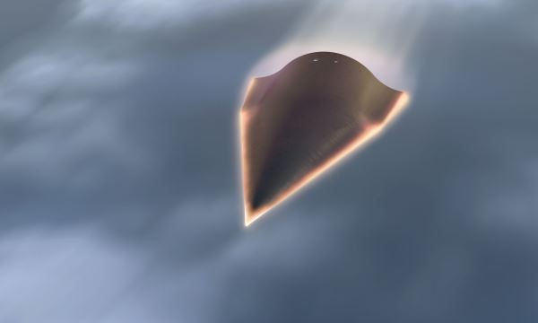

【二炮】中共再次试射WU-14高超音速飞行器
2014-08-20 21:54:00
原文网址：https://blog.udn.com/MengyuanWang/108908627
华盛顿自由明灯报（Washington Free Beacon）是美国军事工业利益集团的喉舌之一，向来努力鼓吹“中国威胁论”以便推动美国国会增加国防开支。美国军方当然是乐观其成，所以常常丢一些共军新发展的小道消息给它；不过为了保密，通常说得很含糊。
昨天（八月19日）自由明灯报报导了中共于八月7日再次试射WU-14高超音速飞行器的消息。虽然在过去两个礼拜各种蛛丝马迹已经引起了网络上有关WU-14的揣测，但是自由明灯报的文章算是有了美国军方的非正式证实。
那么什么是“高超音速飞行器”（Hypersonic Vehicle）呢？一般定义为5倍音速（5 Mach）以上的飞行器。这些飞行器只能在大气层边缘极稀薄的空气里运行，否则空气阻力会使其燃烧坠毁，所以飞行高度大约在100公里左右，目前只能由弹道导弹或卫星火箭来发射。高超音速飞行器又分为两类：有动力和无动力。在这么高的速度下，连衝压引擎（Ramjet）都无法有效工作，更别提普通的喷射引擎了，所以必须开发超衝压引擎（Supersonic Ramjet, or Scramjet）；美国和澳洲在这方面最领先，但是几次试験只有失败没有成功。因此所谓的高超音速飞行器成功试射，到2014年为止都还只是无动力的滑翔飞行器。
虽然俄国和印度也有高超音速飞行器的研究计划，但是没人相信俄国在三年之内，印度在三十年之内能成功试射，现在基本上是美国和中共之间的竞赛。美国有两个方案：AHW（Advanced Hypersonic Weapon，先进高超音速武器）是陆军委托桑迪亚国家实验室（Sandia National Lab）搞的，2011年十一月试射成功，速度低于10 Mach，飞行距离连火箭助推段共3700公里。从下图可以看出AHW基本上是一个标准的洲际弹道飞弹弹头加上四片小翼，它其实只是一款能小幅机动的弹道飞弹弹头，而没有以高超音速滑翔的能力，所以3700公里比助推火箭的原本射程还小。HTV-2则是空军委托DARPA（Defense Advanced Research Projects Agency，国防部先进研究局）办的Falcon Project（飞隼计划）的最新设计，速度达到20 Mach，预定飞行距离10000公里以上。这才是真正的高超音速飞行器，可是HTV-2在2010年和2011年两次试射都失败，DARPA只好重新设计下一代的飞行器。
AHW

HTV-2
共军的WU-14在今年的一月9日第一次试射，可能使用了东风导弹（目前的小道消息指出用的是全新的东风16）来助推。八月7日的试射改用了长征二号丙火箭（CZ-2C）。两次试射距离都在1000公里左右。目前有关WU-14的细节基本上是一片空白，既没有图片也没有数据，连名字都没有（WU-14是美国给的编号），不过有些侧面的资料：首先是研究的工具；高超音速飞行器需要高超音速风洞，20世纪的高超音速风洞是活塞式的，速度低，持续时间短，压力不稳定，例如日本的HIEST（High Enthalpy Shock Tunnel）最高气流速度在16Mach以下（相当于5Mach的飞行器），在不到2毫秒（ms，millisecond）工作时间内，压力损失达到30%，根本不足以进行有用的实験。1990年代末期出现的爆轰驱动激波风洞实现了革命性的进步，中共建立了JF10，德国有TH2-D，美国的国家航空太空总署（NASA）则建了HYPULSE（Hypersonic Pulse Facility），最高气流速度都达到了20Mach以上，工作时间超过了6毫秒。中共在这方面明显地领先全球，2012年进步到了JF12，最高气流速度达到了惊人的30Mach，工作时间长达100毫秒，可以有效地复制9Mach飞行器的飞行条件，这对WU-14的开发必然有极大的帮助。
位于中国科学院力学研究所北京怀柔钱学森工程科学实验基地高温气体动力学国家重点实验室内的JF12，全长265公尺、总重约1000公吨，在所有的技术指标上都遥遥领先美国
在用途方面，美国现阶段的目标是开发一款能在一小时内打遍全球的飞弹，可是弹道导弹早已有此能力，高超音速飞行器在性能，价格和技术成熟度上都没有优势。长期来说，美国希望发展高超音速轰炸机，这更是空军为了保全飞行员职位的白日梦。高超音速轰炸机的雷达及红外线特症必然极为明显，本身极为脆弱巨大，不能快速转向，又不像弹道导弹在大气层外可以施放诱饵，在反导技术日益成熟的今日，其生存能力基本上等于零。所以高超音速飞行器对美军的价值是很有疑问的。对共军来说，则刚好相反，高超音速飞行器是用来加强弹道导弹的功能的，尤其是东风21这类中程飞弹，换装小型高超音速飞行器弹头之后，不但射程增加1/3以上，而且可以在中途做高机动转向以规避像THAAD或GMD之类的反导飞弹系统，这才是高超音速飞行技术的军事实用价值所在。
【后注】美国陆军于八月25日进行AHW的第二次试射，因火箭故障在发射后即爆炸而失败。原本计划总飞行距离6500公里，包含AHM的侧向机动试験。美国陆军应会重覆这个试射，但何时进行还不清楚。